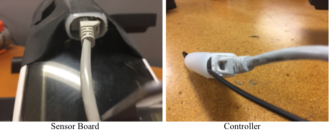
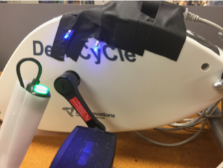
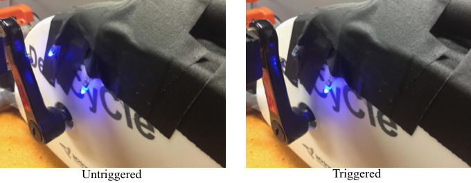
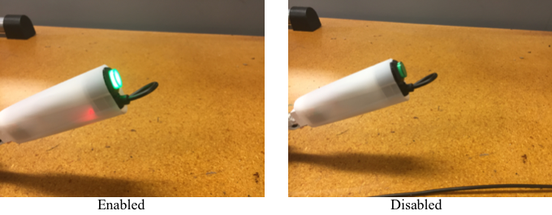
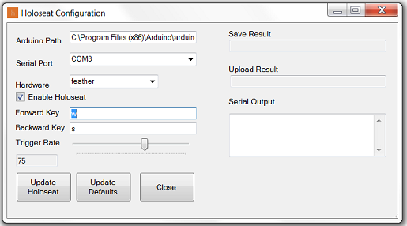

« Previous -
Version 19/21
(diff) -
Next » -
Current version
J. Simmons, 12/22/2016 04:12 pm
Operating Manual¶
Introduction¶
Welcome to the Holoseat. We hope it serves you as well as it has our development team (yes, we really use it). Please be sure share your experience online.
The Operating Manual covers the set up and use of the Holoseat. It starts with the steps needed to prepare the Holoseat for first time use. It then moves on to how to use the Holoseat hardware while playing your games, followed by instructions for the desktop configuration app. Finally, the Operating Manual closes with some troubleshooting steps.
Setting up the Holoseat¶
There are two physical components to the Holoseat: the sensors which are attached to your exercise pedals and the controller which is connected to the sensors and your computer.
- Begin setting up the Holoseat by placing your pedals in front of your computer at a comfortable distance from your chair. Pedal a few times from your preferred position for gaming to ensure you can use the pedals while playing.
- Next, place the Holoseat controller next to your computer so you can reach the Enable button (the large green button on the Holoseat controller, it will light up when the Holoseat is enabled)
- Connect the Holoseat sensors to the Holoseat controller using a Cat5 cable
 - Connect the Holoseat controller to the computer using a USB cable. The sensor lights should light up, and if you are using the standard default settings the Holoseat controller Enable button should be lit indicating the Holoseat is enabled and that pedaling will result in keystrokes on the computer.
 - Test the Holoseat by opening a text editor (e.g. Notepad on Windows) and pedaling forward. If you are using the standard default settings, you should see a string of 'w' characters printed in the text editor.
- If you are running Windows and have not already installed the desktop configuration app, download it from here and unzip the files to Documents\Holoseat.
- Be sure to adjust the resistance on your pedals to a level that is not too easy and not too hard (you are looking for a resistance level that challenges you while still allowing you to pedal for long periods of time). If the resistance is too low you will overshoot your walk cadence and have difficulty using Holoseat in games. If you set it too high you will tire yourself out before the end of a gaming session and have difficulty getting your character to walk.
- Similarly, use the desktop configuration app (see below) to set a default cadence that works for you. It should not be too slow nor too fast.
Using Holoseat in game¶
As you will see, using the Holoseat in game in intuitive and only takes a few minutes to learn. Once you are in a game which uses keyboard controls to control motion (e.g. wasd) all you have to do to use the Holoseat is pedal to move and stop pedaling to stop.
If you pedal forward your character will walk forward. If you pedal backwards, your character will walk backwards. Holoseat currently supports to walking speeds: single step and continuous walking. To single step, simple pedal one rotation (either forwards or backwards). To walk continuously (forward or backward), you need to pedal at or above your trigger cadence (controlled in the desktop configuration app). While you are pedaling you will see the sensor lights blink off as you pedal past each sensor. This behavior indicates the sensor recognizes your pedal activity. If you do not see the lights blink off adjust the magnet/sensor placement until you do.

The Holoseat can be disable so you can use the pedals without triggering keystrokes during non-gaming activities. Press the green Enable button on the Holoseat controller to disable or enable Holoseat. The Enable button will be lit when Holoseat is enabled and unlit when it is disabled. Note, you can also disable/enable Holoseat from the desktop configuration app.

Configuring Holoseat with the Desktop App¶
The desktop configuration app resides in the Windows system tray. Start it by running Documents\Holoseat\HoloseatConfigurationUtility\HoloseatConfig.exe. Then bring up the user interface by clicking the 'h' icon in the system tray.
You can use the desktop configuration app to make live updates to Holoseat's settings (these changes are not preserved when Holoseat loses power, e.g. when it is unplugged) and to update its default settings (these changes are preserved when Holoseat loses power). Before using the configuration app, ensure the Serial Port is set correctly (it usually finds the correct port) and the Hardware select box is set to feather.

You can control four settings in the desktop configuration app.
- Enable/Disable
Checking the Enable Holoseat checkbox will enable the Holoseat, unchecking will disable it - Forward Key
Enter a single key to be pressed when walking forward. Note, this value is case sensitive ('w' is different than 'W' to the Holoseat) - Backward Key
Enter a single key to be pressed when walking backward. Note, this value is case sensitive ('s' is different than 'S' to the Holoseat) - Cadence
Move the Trigger Rate slider to adjust how fast you need to pedal to begin walking (this setting affects walking forward and backward). The exact value will be displayed in the field below.
To push your changes as live updates, click the Update Holoseat button. To push your changes as updates to the default values, click the Update Defaults button. Note, updating defaults requires installation and configuration of the Arduino IDE. See Software Setup page for more details (be sure to specify the path to your Arduino IDE installation in Arduino Path field.
Troubleshooting¶
I am pedaling, but my character is not walking.¶
There are a couple of things to try when your character is not walking.
- Is the Enabled button lit?
If not, enable the Holoseat by pressing the Enable button or using the desktop configuration app. - Are the sensor lights winking off when you pedal past them?
If not, adjust the placement of the magnet/sensors until they do. - Check the resistance on your pedals and the trigger cadence in the desktop configuration app to ensure they are set properly for you.
It takes a long time for my character to start or stop walking¶
This issue is usually caused by improper configuration of the Holoseat. You should adjust the resistance on your pedals so it is neither too easy nor too hard. Then adjust your cadence in the desktop configuration app until walking works naturally. You may need to adjust these settings from time to time as you build up your strength.
{kind=link}
{kind=link}
{kind=link}
{kind=link}
{kind=link}